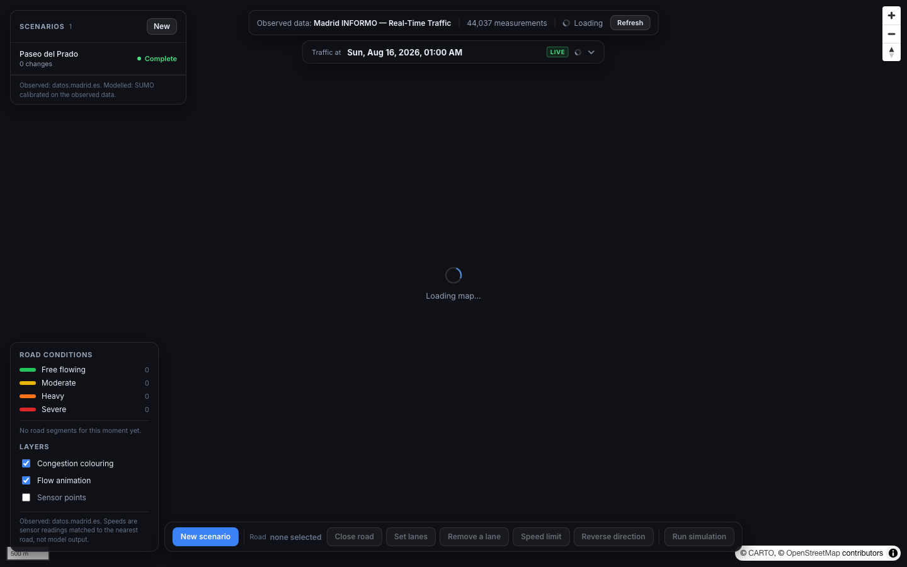
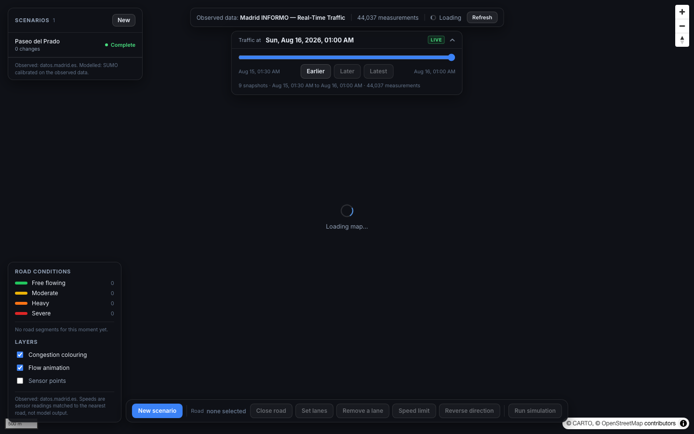
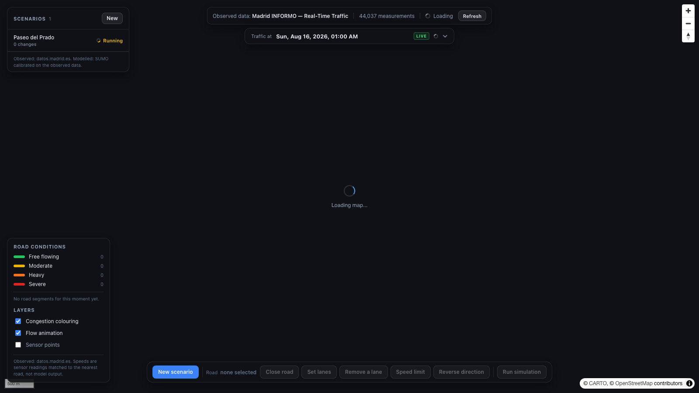

Browser-based traffic scenario lab for central Madrid. Draw a road closure or speed-limit change on the map, hit Run, and a SUMO microsimulation returns fleet-level KPIs: mean speed, total delay, vehicle-km: in under two minutes, calibrated against live INFORMO loop-detector data.

Traverse lets you design and run a traffic scenario for central Madrid in the same time it takes to write a permit application. Select or create a scenario in the panel, add patches (close a road, lower a speed limit, change lane count), click Run, and the backend starts a SUMO microsimulation on the patched road network. Results: mean speed, mean delay, vehicle-km, total vehicles: arrive inline in the panel when the run completes.
Traffic density for each simulation is calibrated from the average vehicle intensity measured by Madrid's INFORMO loop detectors (4,893 measurement points) inside the study area. The SUMO network is built directly from an OpenStreetMap extract of the Gran Vía corridor using netconvert, so every edge in the simulation corresponds to a real road.
Four stages, from scenario definition to KPI results in the panel:
The .net.xml is pre-built and cached. Each run copies it into an isolated temp directory, applies the scenario patches via Python ElementTree, then calls randomTrips.py --validate (which internally runs duarouter) to generate calibrated O-D routes. SUMO runs for 3,600 simulated seconds, 1 s step. Outputs are tripinfo.xml (per-vehicle) and edge_data.xml (3,104 edge intervals). Both are parsed and stored to the DB summary, then surfaced in the React panel.
Four scenario types you can create and run against the baseline:
/api/tiles/{z}/{x}/{y}.pbf. Zoom-adaptive geometry simplification. Colour and width vary by highway class.Real numbers from the first successful end-to-end run on the 5,942-edge Madrid network:
| KPI | Value | Source |
|---|---|---|
| Mean speed | 27.0 km/h | SUMO tripinfo.xml |
| Mean travel time | 386.8 s | SUMO tripinfo.xml |
| Total vehicles | 301 | SUMO tripinfo.xml |
| Vehicle-km travelled | 849.2 km | SUMO tripinfo.xml |
| Mean delay | 113.7 s | SUMO tripinfo.xml |
| Edge result intervals | 3,104 | SUMO edge_data.xml |
| Frontend | React 18 + Vite + TypeScript, zero TypeScript errors. MapLibre GL JS for all map rendering. Glass-morphism floating panels. No external component library: all inline styles. |
| Map tiles | PostGIS ST_AsMVT → FastAPI → MapLibre. MVT endpoint at /api/tiles/{z}/{x}/{y}.pbf. 33 KB tiles at Z12 for central Madrid. Zoom-adaptive ST_Simplify tolerance. |
| Backend | FastAPI + asyncpg (async throughout). Background task per simulation run. Sync SQLAlchemy engine inside thread pool for SUMO runner. INFORMO, roads, scenarios, patches, observations all in PostGIS. |
| SUMO | eclipse-sumo==1.27.1 via pip. Binary resolved via Path(sumo.__file__).parent / "bin" / "sumo" (not on PATH). randomTrips.py --validate + duarouter for calibrated route files. Run isolation via tempfile.mkdtemp. |
| Database | PostgreSQL + PostGIS. Tables: roads, study_areas, scenarios, scenario_patches, simulation_runs, simulation_edge_results, traffic_measurement_points, traffic_observations. GIST spatial index on all geometry columns. |
| Data | INFORMO XML feed (4,893 sensors, UTM30N → WGS84 via pyproj). OSM extract via Overpass API for Gran Vía corridor (40.4014,−3.7263 → 40.4310,−3.6757). Road segments imported via osmnx. |
asyncpg cast conflict. SQLAlchemy named parameters (:param) conflict with PostgreSQL's cast operator (::jsonb) at the asyncpg driver level. The driver sees :after::jsonb and silently drops the bind, leaving the SQL unsubstituted and returning PostgresSyntaxError: syntax error at or near ":". Fixed everywhere by replacing ::type suffixes with CAST(:param AS type).
CTE materialization breaks KNN. The road-conditions query used a latest_per_sensor CTE to pre-compute each sensor's most recent speed reading, then joined via JOIN LATERAL … ORDER BY geom <-> road LIMIT 1. PostgreSQL materializes CTEs by default (PG 12+), discarding the GiST spatial index on the base table. Without it the LATERAL degrades from O(roads × log sensors) to O(roads × sensors): ~29 million geography comparisons, 120 s → timeout. Fixed by replacing the CTE with nested LATERALs scanning traffic_measurement_points directly so idx_tmp_geom drives the KNN scan. Query time after: 30 ms.
netconvert segfault (exit 139). Custom node/edge XML generated from PostGIS caused netconvert to segfault during junction-shape computation. Root cause: osmnx simplifies multi-segment roads into compound OSM IDs like [7642969, 1184792073], producing edge IDs of the form way/[7642969, ...] which are invalid in SUMO's XML parser. Fixed by switching from PostGIS-generated XML to direct OSM file import via netconvert --osm-files madrid_network.osm. The native parser handles all 5,942 edges cleanly.
NaN maxspeed propagation. osmnx stores missing maxspeed values as "nan" strings. In Python, float("nan") is a valid float (not a ValueError), so NaN propagated silently into SUMO's network XML causing invalid maxSpeed warnings. Fixed with an explicit NaN check (val == val) before using the speed value.
SUMO binary discovery on macOS ARM64. shutil.which("sumo") returns None because the eclipse-sumo pip package installs its binaries into the venv's lib/pythonX.Y/site-packages/sumo/bin/, which is not on PATH. Fixed via explicit lookup: Path(sumo.__file__).parent / "bin" / "sumo".
All screenshots taken from the live running application.

